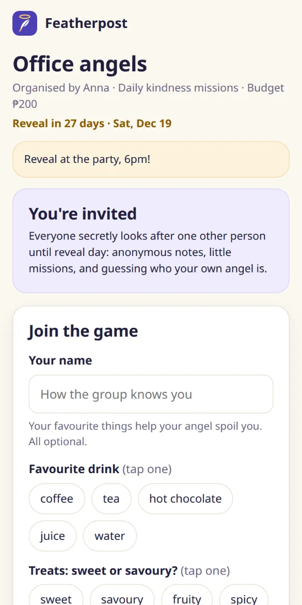
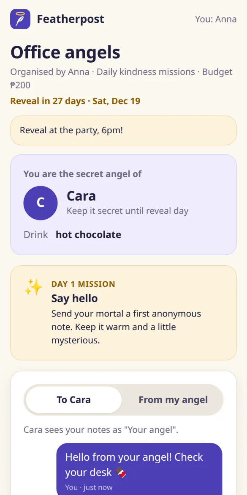
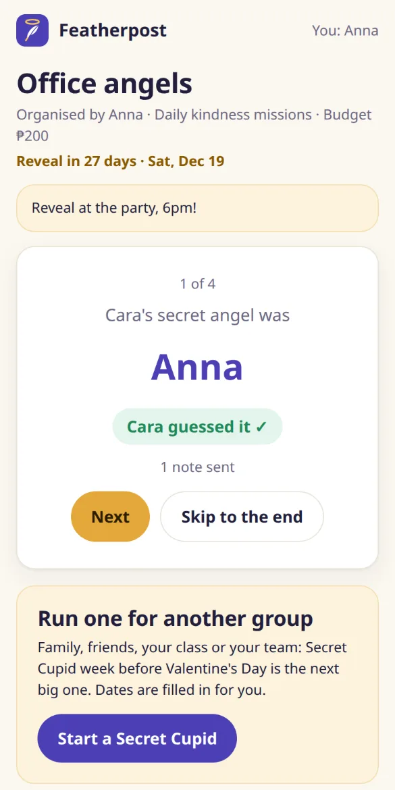

The secret angel game for your group chat
Everyone secretly looks after one other person for a week, for Advent or for a month. Anonymous notes, daily kindness missions or weekly gift themes, guessing, and a reveal that unmasks the whole circle.
What you get
- One link for the group chat. People join with a name and a few favourite things.
- A single secret circle: each person looks after one other person.
- Anonymous notes both ways: write to your mortal, reply to your own angel.
- Daily kindness missions or weekly Monito-style gift themes.
- Log a guess for who your angel is, change it any time.
- Reveal day: unmask the circle one person at a time, with a circle diagram and who guessed right.
- Report button and a basic kindness filter. Data deleted 14 days after the reveal.
Screenshots



Support
I lost my place in a game
Your place is saved in the browser where you joined. If you opened the link inside WhatsApp or Messenger, open it there again. To move to another device, use "Copy my secret link" on your game page.
Someone sent an unkind note
Tap "Report" under the note. It disappears for you, and the organiser sees it with the sender's name.
Can we add someone after the draw?
No: the draw makes one closed circle. If someone is missing, the organiser can delete the game and start a new one before anyone has written notes.
Contact
Open an issue at github.com/janwan2003/secret-angel/issues.
Privacy
Featherpost stores only what a game needs: game details, players' names and optional favourite things, who looks after whom, notes, guesses and reports. No email, no accounts, no ads, no tracking cookies. Games are deleted 14 days after the reveal (or 120 days after creation). Full policy: pb-secret-angel.pages.dev/privacy.